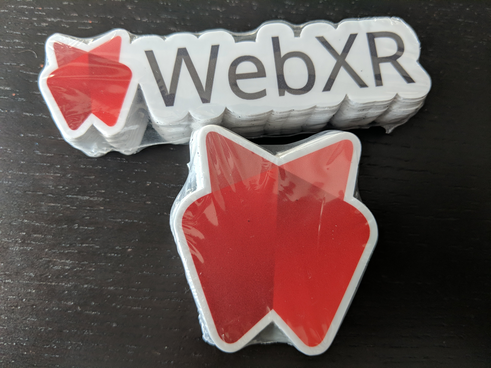

🗓️ September@w3c: #W3CWorkshop, @w3cx MOOCs, W3C TPAC and DevMeetup in #Japan, etc. https://www.w3.org/participate/eventscal.html

9-10 Sept.: Hosted by @BMW, the @w3c #auto #WorkingGroup meets in #MountainView 🇺🇸 https://www.w3.org/auto/wg/wiki/Main_Page#Upcoming_F2F_Meetings
https://twitter.com/w3cdevs/status/116850755377034444810 Sept.: Learn how to build Web sites with #HTML5 and #CSS with this @w3cx #MOOC: https://www.edx.org/course/html5-and-css-fundamentals-2 @Microsoft @edXonline

https://twitter.com/w3cdevs/status/116850757805117440812 Sept.: @hdv of the @wai team explains 6 ways to make your #WebSite more accessible, at the #Ghent inclusive design #meetup 🇧🇪: https://www.meetup.com/Inclusive-Design/events/262945395/ #accessibility #a11y @watt_factory
https://twitter.com/w3cdevs/status/116850758225379737612-13 Sept: 2 days of talks and discussions at the #W3CWorkshop on Data Models for Transportation in #PaloAlto 🇺🇸; hosted by @Uber and sponsored by @geotab: https://www.w3.org/auto/events/data-ws-2019/ #ConnectedCar #auto #DataModel
https://twitter.com/w3cdevs/status/116850759609069977716 Sept.: We're excited to meet Japanese #Web #developers and #designers in #Fukuoka 🇯🇵 for the annual @w3c #devmeetup #w3cdevs2019! Check out the awesome speakers and great demos:
https://www.w3.org/2019/09/Meetup/
https://twitter.com/w3cdevs/status/116850760583004569716-20 Sept.: @w3c members, staff and invited experts meet in #Fukuoka 🇯🇵 to shape the future of #Web standards! #w3cTPAC
https://www.w3.org/2019/09/TPAC/
https://twitter.com/w3cdevs/status/116850760901773721818 Sept.: Learn how to take your Web pages from bland to bold with the power of CSS styling with @w3cx! Enroll the #CSS Basics #MOOC: https://www.edx.org/course/css-basics @edXonline @Microsoft

https://twitter.com/w3cdevs/status/116850762811859763225-28 Sept.: Check out the @restfest conference in #Greenville 🇺🇸 #REST #API #WebServices
https://twitter.com/restfest/status/1164177333202239489
https://twitter.com/w3cdevs/status/116850763243026841630 Sept.-1 Oct.: Impressive line of speakers, lighting talks, conversation corners, etc. ➡️ all of it is in #Amsterdam 🇳🇱 @viewsourceconf! The @w3c staff @hdv, @marieforgue and @dontcallmeDOM are looking forward to your questions - register soon! https://mozilla-tito-vs.netlify.com/

https://twitter.com/w3cdevs/status/1168507658002980864Want to know how to apply a #HighContrast theme to view digital interfaces in a limited color palette? Do not miss @somelaniesaid's talk in #Fukuoka 🇯🇵 #w3cdevs2019 #CSS #accessibility
https://www.w3.org/2019/09/Meetup/speaker-melanie.html
https://twitter.com/w3cdevs/status/1168811365781463041Listen to Judy Zhu @AlibabaGroup explaining why there is a need for standardization of Mini Apps, a widely Web-based format for apps in China and other markets, at @w3c Track @TheWebConf. The Chinese Web #InterestGroup meets in #Fukuoka #w3cTPAc on 20 Sept
https://vimeo.com/357308688
https://twitter.com/w3cdevs/status/1168823370869346304Listen to @metaviv from the Thoughtful Technology Project reporting on his talk @WebConf on the W3C #CredibleWeb #CommunityGroup and its goals of fighting #misinformation with a Data Ecosystem (https://credweb.org/) cc @sandhawke
https://vimeo.com/357329636
https://twitter.com/w3cdevs/status/1168826109561122816Last W3C track @TheWebConf video with @andrewshikiar, CMO @FIDOAlliance, who tells us how #FIDO2 and #WebAuthn help solve the problems with #passwords on the Web!
https://vimeo.com/357306658
https://twitter.com/w3cdevs/status/1168830653019938820Did you know that many important technological advances have been driven by the needs of people with #disabilities? Find out more from @sundress at #w3cdevs2019 in #Fukuoka 🇯🇵on 16 Sept. @ITEventFukuoka #a11y #accessibility
https://www.w3.org/2019/09/Meetup/speaker-alice.html
https://twitter.com/w3cdevs/status/1168931466098728960What is #WebXR? What features the #WebXR Device #API bring to the #ImmersiveWeb? Find out more from @Lady_Ada_King at #w3cdevs2019 in #Fukuoka 🇯🇵 on 16 Sept. @ITEventFukuoka #VirtualReality #AugmentedReality @ImmersiveWebW3C
https://www.w3.org/2019/09/Meetup/speaker-ada.html
https://twitter.com/w3cdevs/status/1169996976924090369Find out about VRM, a format for #3D #Avatars on the Web, presented by @FMS_Cat at #w3cdevs2019 in #Fukuoka 🇯🇵 on 16 Sept. @ITEventFukuoka Register soon!
https://www.w3.org/2019/09/Meetup/speaker-yutaka.html
https://twitter.com/w3cdevs/status/1169999835359059968どうもありがとう！This #w3cdevs2019 #developer meetup is made possible with the support of @Microsoft, @nttcom, @pepabo, @mozilla, @stickermule, @igalia, @Yubico, @saucelabs, @webcastors, and @l_withyou
https://www.w3.org/2019/09/Meetup/sponsors.html
https://twitter.com/w3cdevs/status/1170000952348368896Find out with @linclark why #WASM #WebAssembly is a game changer on the #Web and how it complements #JavaScript for tasks that are CPU intensive for example. It's next Monday in #Fukuoka 🇯🇵 at the #w3cdevs2019 #meetup! @ITFukuoka #html5j
https://www.w3.org/2019/09/Meetup/speaker-lin.html
https://twitter.com/w3cdevs/status/1171068865415208960📢🆕! This resource helps understand and create #captions / #subtitles, audio description of visual information, descriptive #transcripts, and #SignLanguage for media 🎧📹 #a11y #accessibility https://twitter.com/w3c_wai/status/1171427311306072064
https://twitter.com/w3cdevs/status/1171435246874583041Soon to be distributed at the upcoming #w3cdevs2019 and #w3cTpac ... /cc @ImmersiveWebW3C
https://twitter.com/w3cdevs/status/1171805637539446785Thanks to @stickermule ! https://twitter.com/w3cdevs/status/1171805637539446785
https://twitter.com/w3cdevs/status/1172095507822284801MiniApps are Web-technology-based third-party developed apps running inside a host app (e.g. chat, social media), very popular in China among others. This white paper looks into the needs for standards in this space. https://twitter.com/w3c/status/1172043497957933056
It will be at the core of a breakout session next week during the TPAC unconference on Wednesday #w3cTPAC https://w3c.github.io/tpac-breakouts/sessions.html#miniapp
https://twitter.com/w3cdevs/status/1172128716404789248And yes, many of the questions that were raised by Widgets or Hosted Apps from SysApps will arise again… https://twitter.com/marcosc/status/1172066844582141953
https://twitter.com/w3cdevs/status/1172128721026916355Judy Zhu provided an introduction to the topic in her video we published a couple of weeks ago https://twitter.com/w3cdevs/status/1168823370869346304
https://twitter.com/w3cdevs/status/1172128719667892224Coming up at #w3cdevs2019 meetup on Monday in #Fukuoka 🇯🇵… https://twitter.com/codepo8/status/1172302272333635585
https://twitter.com/w3cdevs/status/1172380101226323968Implementations are still experimental but worth a try if you're into 3D or parallel computing https://github.com/gpuweb/gpuweb/wiki/Implementation-Status
https://twitter.com/w3cdevs/status/1172398364882657282As usual, the work on these techs happen on github https://github.com/gpuweb/
#WebGPU is a set of APIs defined by the "GPU on the Web" W3C Community Group to provide lower-level access to GPU capabilities in a Web-friendly and WASM-compatible approach https://www.w3.org/community/gpu/ https://twitter.com/webkit/status/1172207111645716480
https://twitter.com/w3cdevs/status/1172398363477598210You can also listen to @deltakosh 's talk at our @w3cdevs/@seattlejs meetup back in June on his experience of adapting @babylonjs from #WebGL to #WebGPU https://www.youtube.com/watch?v=A2FxeEl4nWw&list=PLfCgUsc2B8DULnyLiN_ThYKJBWiPNf-tM&index=4&t=0s
https://twitter.com/w3cdevs/status/1172398366380064768... with big thanks to our #w3cdevs2019 sponsors @Microsoft, @nttcom, @pepabo, @mozilla, @stickermule, @igalia, @Yubico, @saucelabs, @webcastors, @l_withyou for making it possible to organize such an event!
https://www.w3.org/2019/09/Meetup/sponsors.html
It's tonight, #Fukuoka 🇯🇵 time! Over 500 #developers #designers convene at @w3c #DevMeetup #w3cdevs2019
https://www.w3.org/2019/09/Meetup/
https://twitter.com/w3cdevs/status/1173474615047254019Then, @sundress demonstrates how many important technological advances have been driven by the needs of people with #disabilities #accessibility #a11y #w3cdevs2019
https://www.w3.org/2019/09/Meetup/speaker-alice.html
https://twitter.com/w3cdevs/status/1173474618578853894Our first speaker is @somelaniesaid on #HighContrast theme to view digital interfaces in a limited color palette - #CSS #accessibility #a11y #w3cdevs2019
https://www.w3.org/2019/09/Meetup/speaker-melanie.html
https://twitter.com/w3cdevs/status/1173474616976654337Finally, @linclark explains why #WASM #WebAssembly is a game changer on the #Web #w3cdevs2019
https://www.w3.org/2019/09/Meetup/speaker-lin.html
https://twitter.com/w3cdevs/status/1173474623431725057The #WebXR device API is coming to browsers in the not too distant future, as shown by @Lady_Ada_King #VirtualReality #AugmentedReality @ImmersiveWebW3C #w3cdevs2019
https://www.w3.org/2019/09/Meetup/speaker-ada.html
https://twitter.com/w3cdevs/status/1173474622005628929VRM, a format for #3D #Avatars on the Web, is presented by @FMS_Cat #w3cdevs2019
https://www.w3.org/2019/09/Meetup/speaker-yutaka.html
https://twitter.com/w3cdevs/status/1173474620319494144Yes! We will https://twitter.com/yatil/status/1173534493304598528
https://twitter.com/w3cdevs/status/1173595488555192321You'll hear about some of the recent thinking about continuous standards development at @w3c (how to make creating and updating Recommendations more efficient). https://www.w3.org/2019/Talks/TPAC/continuous-standards/
Depending on your timezone and your sleep patterns, you may enjoy our experimental live stream from #w3cTPAC plenary session https://www.w3.org/2019/09/TPAC/plenary-video.html (starting some 9 hours from now, Sep 18 at 00:00 UTC, 9am Japan time) (thanks to @webcastors!)
https://twitter.com/w3cdevs/status/1173983014306533377You'll also get some of the early insights and lessons from the @MDN survey that ran over the summer https://twitter.com/w3cdevs/status/1151244163595296768
https://twitter.com/w3cdevs/status/1173983015761936384Video to be available in a near future! https://twitter.com/fantasai/status/1174112222735241216
https://twitter.com/w3cdevs/status/1174115167996497920thanks to @l_withyou! https://twitter.com/krosylight/status/1173526129350545408
https://twitter.com/w3cdevs/status/1174118129389060096Kicking of @viewsourceconf by @HenriHelvetica

https://twitter.com/w3cdevs/status/1178584234438594560Collective future for shaping the Web @HenriHelvetica #viewsourceconf

https://twitter.com/w3cdevs/status/1178591709661413376Now at #ViewSourceConf, the commitments to the #WebPlatform panel moderated why @torgo w/ @somelaniesaid @KenjiBaheux @cyberdees @AhmadNassri @andreasbovens @hjrchung

https://twitter.com/w3cdevs/status/1178614518181703683Podcast live recorded w/ @adactio #ViewSourceConf


It was awesome! Congrats
https://twitter.com/w3cdevs/status/1178638606069620736A closer look at the #WebStandards community beehive! From @jorydotcom's deep-dive into the standards process, its history, economic and policy implications, etc. at #ViewSourceConf :) Cool!

https://twitter.com/w3cdevs/status/1178655693034938369